LongStraw：固定 GPU 预算下的百万 token 强化学习执行栈
LongStraw 研究的不是如何把大模型推理上下文再拉长，而是如何让共享超长历史上的 GRPO 后训练在固定数量的 GPU 中跑到响应反向传播和优化器调用。论文由 MindLab 的 Changhai Zhou 等人完成，一作主机构为 MindLab，合作机构包括复旦大学；论文于 2026 年 7 月公开，入口为 arXiv:2607.14952。作者给出了公开代码仓库，但仓库当前自述为 review_only_not_runnable，所以“可阅读代码”不能等价为“可直接复现”。
推理系统正在接近百万 token 上下文，但强化学习后训练通常仍停留在 256K 或更短，并把长度泛化风险留到部署阶段。对会持续累积观察、工具输出和历史决策的 Agent 来说，训练还必须在同一长历史上对多条响应评分并反向传播，长寿命计算图因而成为固定 GPU 预算下的主要障碍。
1. 背景和问题
长上下文推理和长上下文后训练的显存语义并不相同。推理服务可以先对 prompt 做 prefill，把后续解码真正需要的 KV 或递归状态留下，再丢弃完整前向图；GRPO 则要在相同历史条件下比较一组响应，既要保存旧策略和参考策略的分数，又要让当前策略对每条响应形成可反向传播的图。即使每条响应很短，其条件概率仍依赖整个 prompt。若把长度为 \(P\) 的 prompt 与 \(G\) 条响应都保留在 autograd 图中，注意力工作区、FFN 中间量、路由状态、适配器激活和反向状态会同时争夺设备显存。
已有技术只能处理其中一部分。FlashAttention 一类方法减少精确注意力的显存与 IO，LoRA/QLoRA 缩小可训练参数、梯度和优化器状态，activation checkpointing 用重算换保存，context parallelism 把 token 历史分给多张卡，expert parallelism 把 MoE 专家分给不同 owner。这些机制都很重要，但它们没有自动回答三个训练系统问题：哪些 prompt 状态必须跨越响应分支长期存活；这些状态的逻辑分片是否真的拥有独立的物理内存；响应反向产生的分片梯度最终是否到达了正确的参数 owner。
LongStraw 的切入点是把“长 prompt”和“短 response”的图生命周期分开。prompt 仍需完整通过所有 decoder 层，但在无梯度模式下执行；每层只留下以后 token 需要的架构相关条件状态，其余 attention scratch、dense FFN 激活、MoE 路由与 expert-token permutation 都立即释放。之后旧/参考分数在参数未改变时固定下来，当前策略只为一条 response 建图、反向、释放，再处理下一条。代价是增加重放时间，收益是同时存活的 policy autograd 图由 \(P+R_i\) 缩到 \(R_i\)。
论文选择两个差异很大的模型检验这条原则。Qwen3.6-27B 有 48 层 GDN 递归 token mixer 和 16 层全注意力，全部 64 层都是 dense FFN；它把固定大小的 GDN 边界状态和随 prompt 线性增长的 KV 页留在 GPU，并通过 CP8 合成全局响应注意力。GLM-5.2 则有 78 层 MLA/DSA、21 个 index-computing layer、57 个 IndexShare consumer，前 3 层是 dense FFN，后 75 层是 256 专家、top-8 路由加共享专家的 MoE；它把 CP32 的 MLA/DSA prompt 页放到 CPU，每次只搬一层到 GPU，并在 EP32 中执行 response 的 MoE 尾部。
理解本文最重要的是作者设定的四级证据。第一层是 execution capacity：请求的 score、backward、collective 和 optimizer call 是否在所有 worker 终止。第二层是 response operator 是否忠实于模型定义的全 prompt 条件前向。第三层是分布式梯度与参数更新是否和 ownership layout 一致。第四层才是与常规 full-sequence 训练的逐参数完整梯度等价。论文当前最可靠的结果停在第一层；Qwen 的 response attention 前向达到第二层但带 BF16 numerator 的数值口径，GLM 历史回执连第二层也未达到。因此“超过 2M token”在本文中首先是执行容量回执，不是完整训练正确性，更不是策略质量或长上下文任务能力结论。
2. 方法
2.1 GRPO 依赖图与停止梯度边界
LongStraw 实例化的是 member-normalized GRPO。对第 \(i\) 条响应的第 \(t\) 个 token，重要性比率与 clipped policy surrogate 可写为：
符号解释：\(P\) 是共享 prompt 长度，\(G\) 是响应组大小，\(R_i\) 是第 \(i\) 条响应的计分 token 数，\(A_i\) 是组内标准化优势，\(\epsilon\) 是裁剪宽度。LongStraw 没有用新的 loss 替代 GRPO；它改变的是生成这些条件 log-probability 与梯度的执行图。参数在整组响应处理完之前不能 step，否则 old/current ratio、组内优势所依赖的策略快照和 prompt state 会在成员之间漂移。
真正被舍弃的是 prompt state 对参数的梯度链。令 \(z_P(\theta)\) 为模型处理完整 prompt 后的条件状态，常规 full-sequence loss 的梯度包含两项：
符号解释：第一项是在 prompt state 固定时，response 路径对参数的直接梯度；第二项表示 prompt state 本身随参数改变而产生的梯度。实现把 \(\bar z_P=\operatorname{stopgrad}(z_P(\theta))\) 交给重放，因此只保留第一项。即使 response attention 在分布式前向上完全精确，也无法恢复第二项。一次 optimizer step 把 \(\theta_k\) 变为 \(\theta_{k+1}\) 后，按 \(\theta_k\) 捕获的状态已经陈旧，下一次 prompt-adapted update 必须重捕获。
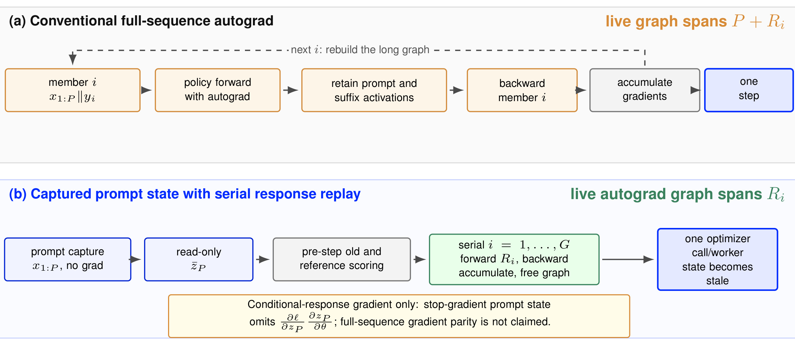
Figure 2 把这一区别画得很直接。上半部分的 live graph 覆盖 \(P+R_i\)，每个成员都要重建长图；下半部分先得到只读 prompt state，再把 live autograd 范围压到单条 \(R_i\)。串行循环只限制同时存活的 response graph，不会让 \(G\) 在统计或系统上消失：优势仍由整组奖励定义，输入、标签、old/reference score 和总耗时仍随组大小增长。图底部明确标出了被省略的 prompt-state 梯度项，这也是本文不能宣称 full-gradient parity 的根本原因；而且该状态在 optimizer step 后会立即失效，下一轮循环必须重新 capture。
2.2 捕获一次、串行重放：状态生命周期与物理所有权
一次 update 分四个阶段。第一阶段在 \(\theta_k\) 下无梯度运行完整 prompt，只保存以后 token 需要的模型状态。第二阶段把状态设为只读，并在参数不变时固定 old/reference log-probability。第三阶段逐成员重建短 response graph、反向并释放。第四阶段在 \(G\) 次本地 backward 后调用一次 worker optimizer，再清空梯度。其资源近似为：
符号解释：\(M_{\mathrm{fixed}}\) 含权重、适配器和优化器等常驻项，\(M_{\mathrm{prompt}}\) 是架构状态，\(M_{\mathrm{grad}}\) 是累积梯度，最大分支项表示只保留一条 live response graph，score 项则提醒旧/参考分数仍按总响应量增长。时间式没有省掉任何成员，串行节省的是峰值生命周期而不是总计算。
LongStraw 的核心机制是“只让跨 prompt/response 边界仍被模型算子依赖的状态存活”，并要求逻辑 ownership 与物理 allocation 一致。例如从 4,096-token 大块里切一个 64-token page view，虽然逻辑上只保留小片，allocator 仍可能因为 view 存活而无法释放 parent。Qwen 因此把 owner page 复制进 right-sized allocation；GLM 在 CPU 页上同样保存页 ID、局部顺序和全局位置，避免字节正确但 causal/index 语义错误。
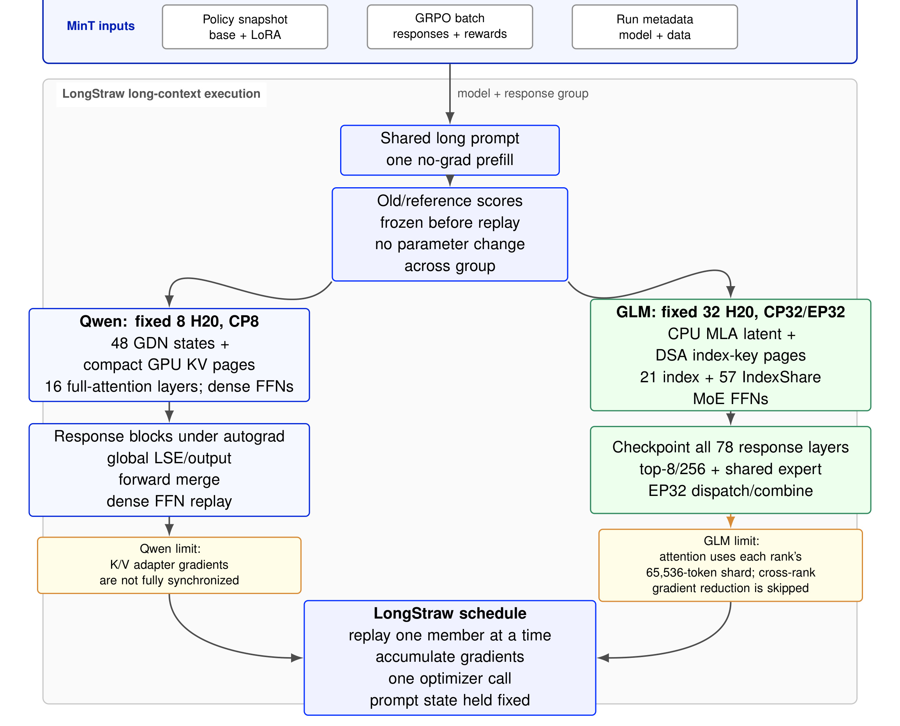
Figure 1 从输入到终点串起了两条实现。共同主干是 model snapshot 与 response group 进入一次 no-grad shared prompt，old/reference score 在 replay 前冻结，然后逐成员累积梯度并只调用一次 optimizer。左侧 Qwen 保留 GPU GDN state 与 CP8 KV pages；右侧 GLM 保留 CPU MLA latent/DSA index-key pages并对 78 层做 checkpoint。橙色框不是实现细节注脚，而是结果边界：Qwen 的 K/V adapter gradient 未完整同步，GLM 历史路径的 attention 只看各 rank 的 65,536-token shard，且跨 rank gradient reduction 被跳过。
2.3 Qwen：紧凑页、全局前向与未闭合反向
Qwen 路径把 2,088,960-token prompt 分为 32,640 个 64-token page，按 block-cyclic 规则分给 8 个 context rank：
16 层全注意力、4 个 KV head、head dimension 256、BF16 K/V 两份带来每 rank 的原始 prompt KV payload：
符号解释：第一个 16 是全注意力层数，2 表示 K 与 V，64 是页大小，4 是 KV head 数，256 是 head 维度，末尾 2 是 BF16 字节数。48 个 GDN 层只跨边界保留固定大小递归状态，因此 prompt 长度斜率集中在 16 组 KV pages 上。
每个 rank 对本地 KV shard 得到局部归一化输出 \(o_{r,t}\) 与 log-normalizer \(\ell_{r,t}\)。全局 response attention 用稳定 log-sum-exp 合成：
符号解释：\(m_t\) 提供数值稳定的全局最大值，\(a_t\) 汇总各 shard 的 softmax 归一化量，\(n_t\) 汇总加权 value 输出，最终 \(o_t\) 等价于对所有 CP8 KV pages 的条件注意力。实现需要一次 MAX 与两次 SUM collective；\(n_t\) 为降低通信使用 BF16，而最大值、分母和全局 LSE 保持 FP32，所以这里的“全局”指分区算子被正确合成，不是与单卡 FP32 bitwise 相等。
反向的 ownership 尚未闭合：
符号解释：查询梯度 \(dq\) 已 all-reduce；但 K/V projection 的 LoRA 权重是复制的，各 page owner 产生的 \(\nabla W_K^{(r)}\)、\(\nabla W_V^{(r)}\) 仍需选择性合成。实现只做了第一组求和，八个 AdamW 实例随后各自 step。因为 query 分支已经全局、K/V 分支仍局部，事后把所有 completed gradient 无差别再 all-reduce 也不正确，必须在各参数真实 ownership 边界上归约。
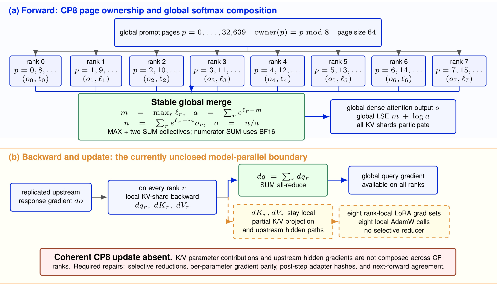
Figure 5 上半部分展示 page \(p\bmod8\) 的分布与稳定全局 softmax，下半部分沿着 response upstream gradient 分出两条路径：绿色的 \(dq\) 通过 SUM 获得全局值，橙色的 \(dK_r,dV_r\) 停在本 rank，继而形成八套局部 LoRA 梯度与八次本地 optimizer call。图中红框要求的 selective reduction、逐参数 parity、step 后 adapter hash 与 next-forward agreement 均未在回执中出现。因此 Qwen 的正确表述是“全局条件前向加 update-shaped execution”，不是 coherent CP8 update。
2.4 GLM：CPU 页、局部 DSA、整层 checkpoint 与分布式缺口
GLM 的 CP32 使用 Megatron zigzag mapping。2,097,152-token prompt 共有 32,768 个 64-token page，先切成 64 个连续 chunk，每个 512 页；rank \(r\) 拥有 chunk \(r\) 与镜像 chunk \(63-r\)：
每 rank 因而持有 1,024 页、65,536 tokens。78 层都保存宽度 576 的 MLA latent pages，只有 21 个 index-computing layer 保存宽度 128 的 DSA key pages：
符号解释：\(\mathcal{P}_r\) 既定义 owner 也保存全局页顺序；\(\mathcal{I}_{\mathrm{compute}}\) 是产生 sparse index 的层，另外 57 层复用相邻 producer 的 per-forward top-k。72/16 MiB 是页张量契约推导的 payload，不含 response activation、kernel workspace 或 whole-transaction peak。top-8 路由还会把每 rank 的 65,536 prompt token 扩为 524,288 expert-token rows，单个 \([524{,}288,6144]\) BF16 hidden buffer 就是 6 GiB，这解释了为什么只优化 DSA scratch 后 OOM 会迁移到 MoE 路径。
历史回执中，每个 rank 只在自己的 \(\mathcal{P}_r\) 内选 top-2,048：
符号解释：第一式是已经执行的 local DSA，第二式才是模型定义下的 global DSA。二者不能靠相同 \(k\) 值混同；全局算子还需要跨 rank 合并 candidate、按 owner 交换 selected K/V，并合成一致的 response hidden state。
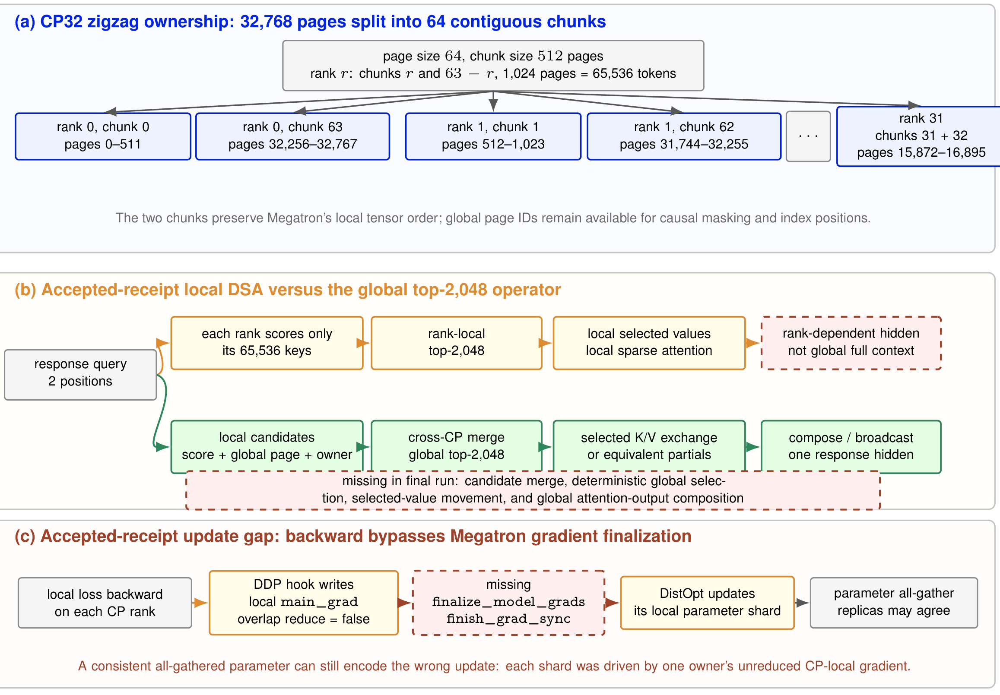
Figure 6 的三部分把两个独立问题分开。(a) 说明 zigzag owner 仍保留全局 page ID；(b) 上方橙色路径是历史回执，只从本地 65,536 keys 得到 rank-dependent hidden，下方绿色路径才包含 cross-CP merge、selected-value exchange 与 compose/broadcast；(c) 显示 DDP hook 只写入 local main_grad，但 finalize_model_grads/finish_grad_sync 缺失。即使随后 parameter all-gather 让副本数值一致，也只是把分别由不同局部目标更新的 shard 拼在一起，不能补回 optimizer 前遗漏的全局梯度和。
response replay 时，CPU 只保留 prompt pages，GPU 每次 staging 一层：index-computing layer 搬 MLA 与 DSA key，产生 \([1,2,2048]\) local top-k；IndexShare layer 只搬 MLA 页并消费同一 forward 的选择。attention projection、稀疏 attention、output projection 以及 dense/EP32 MoE tail 全部放进一个 reentrant whole-layer checkpoint，反向按 77 到 0 的顺序重新搬页、重算并释放。attention-only checkpoint 不够，因为 router、dispatch permutation、expert input、LoRA intermediate 与 combine buffer 仍会跨层存活。
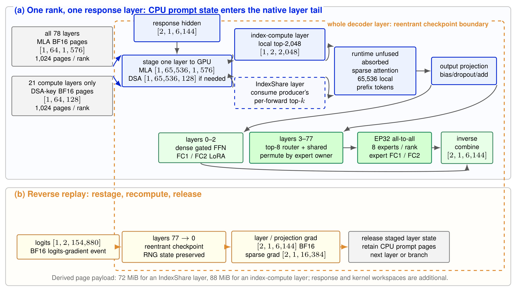
Figure 7 给出了实际 tensor contract：response hidden 为 \([2,1,6144]\)，每 rank 的 MLA 层物化为 \([1,65536,1,576]\)，需要时再搬 \([1,65536,128]\) DSA key；前三层走 dense gated FFN，3–77 层走 top-8 router、EP32 all-to-all、expert FC1/FC2 与 inverse combine。逆向只保存短输入和最少 metadata，重算后产生 layer/projection gradient \([2,1,6144]\) 与 sparse gradient \([2,1,16384]\)。这张图能证明路径确实穿过原生 MoE tail，而不是 attention-only surrogate；它仍然没有记录参数梯度张量、跨 rank reduction 或数值 parity。
GLM 非 expert 复制参数所需梯度应为：
符号解释：\(g_r\) 是 rank \(r\) 对 CP-replicated attention、dense/shared FFN 与 output-head adapter 产生的局部梯度，\(r(s)\) 是 optimizer shard 的 owner。历史路径绕过 Megatron gradient finalization，distributed optimizer 从未归约的 full buffer 中取自己那一片再 all-gather。routed-expert adapter 在 EP32、expert data-parallel size 1 下是唯一 owner，不需要同样的复制梯度平均；缺口主要落在非 expert 复制适配器和未完整审计的 shared-expert hook。
3. 实验结果
3.1 核心执行回执与 group 规模
Qwen 在固定 8×H20、CP8 上使用 2,088,960 prompt tokens 和每成员 8,192 response input positions，总 context 恰为 2,097,152。\(G=2\) 单次运行耗时 5,198.780 s、峰值 allocated memory 97.503 GB；\(G=8\) 耗时 6,785.225 s、峰值 97.711 GB。组大小扩大四倍只增加 0.208 GB（0.213%），但增加 1,586.445 s。共享 prefix 捕获约 4,655 s，串行 member 主要增加 old/reference scoring 与 reverse replay 时间。这里有两条限制：这是两个单次 anchor，不是拟合 scaling law；8,192 是 response input 数，实际最多计分 8,191 个 suffix targets。
GLM 在固定 32×H20、TP1/CP32/EP32 上用 2,097,152-token prompt 和两条极短响应，完成两次 78-layer backward 与 terminal optimizer call，prompt capture 加 grouped transaction 为 2,975.138 s。表中 Peak 写 n/r，因为 112.571–145.148 GB 只是 prefix-capture window 的每 rank max_memory_allocated，读取发生在 response replay 之前，不能当 whole-transaction peak。
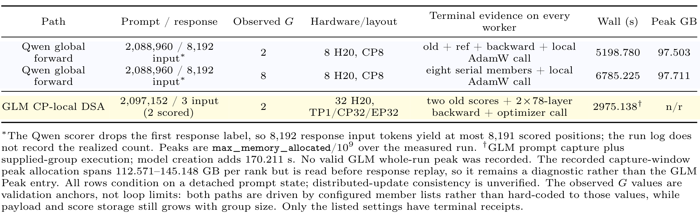
Table 5 是本文最核心也最容易被误读的结果表。“Terminal evidence”只写所有 worker 到达了哪些事件：Qwen 是 score、backward 与 local AdamW call，GLM 是 two old scores、两次 78-layer backward 与 optimizer call。表脚再次声明所有行都条件于 detached prompt state，distributed-update consistency 未验证；不同模型、GPU 数、suffix 长度和语义缺口使 wall time 不可横向做吞吐排名。它支持“固定预算下程序达到终点”，不支持“模型完成正确 GRPO 更新”。表脚还说明 GLM 没有有效 whole-run peak，不能把 capture-window 诊断值误填为主结果。
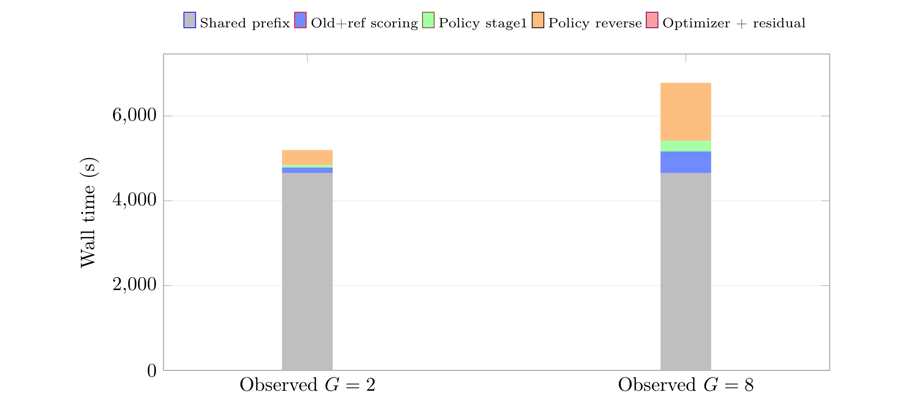
Figure 9 解释峰值近似不变为何不等于免费扩组。两根堆叠柱的灰色 shared prefix 几乎一样，\(G=8\) 增加的主要是 policy reverse 与 old/reference scoring；图例中的 final segment 还是 phase-sum residual，而非纯 optimizer timer。共享一次 prefix 使平均每 supplied response 的 wall time 从 2,599.390 s 降到 848.153 s，但总 post-prefix 工作几乎按成员数增长。更大的 \(G\) 仍会受到 input/score storage 与时间预算限制，且会改变 GRPO 的优势估计。因此这幅图反映的是 prefix amortization 与串行代价，不证明 wall time 严格线性。
3.2 GLM 的分阶段容量门槛
GLM 路线不是一次性系统优化。常规 full-sequence LoRA 在 32K 通过，拉到 2.097M 后 OOM 依次迁移到 DSA scratch、expert-LoRA 与 MoE concatenate，说明不存在一个被修掉就能完成的单点峰值。作者先验证全 78 层 no-grad prefix capture，再做 layer-0 differentiable replay，随后在 32K/64K 关闭 IndexShare holder、CP guard、in-place view 和 checkpoint tail 问题，最后才加入 CP32/EP32、CPU pages、\(G=1\) canary 与 fresh \(G=2\) transaction。
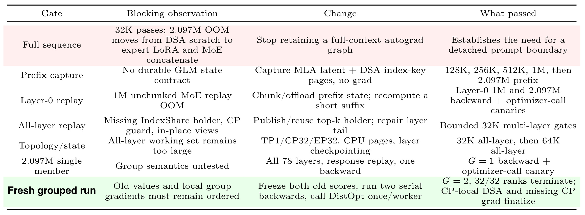
Table 4 的价值是把“通过”限定在每个 gate 的最右列。prefix capture 只证明 2.097M 状态能被无梯度计算和保存，不证明 differentiability；layer-0 canary 只证明一层能恢复并反向；all-layer 32K/64K 关闭了架构路径；\(G=1\) 只证明 terminal control flow，不能形成非退化 GRPO advantage group；最终 \(G=2\) 虽然 32/32 ranks terminate，最右列仍明确保留 CP-local DSA 与 missing CP grad finalize。阶段是 execution coverage 单调增加，不是 semantic fidelity 单调升级。
3.3 轨迹覆盖与内存口径
GLM 最终运行生成 128 个 rank/phase JSONL 文件，共 35,584 条事件。两个 old phase 各有 32 files、每 rank 78F/0B；两个 policy phase 各有 32 files、每 rank 78F/78B。两次 policy 合计 4,992 forward 与 4,992 backward layer-end events，每个 policy rank 的 78 层都记录 checkpoint。
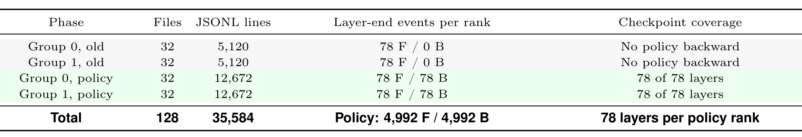
Table 7 能排除“只跑了一层”或“只跑了 attention”的弱替代解释：trace 还记录 attention-projection 与 sparse-attention backward shape，论文也核对了 dense/MoE tail。可它不能排除计算数值错误，因为 layer-end event 不含参数梯度 tensor、global norm、collective 结果或 optimizer delta。类似地，GLM capture-window peak 的 32.577 GB rank spread 暗示 placement/load balance 还有空间，却不能推出“完整 transaction 还能再加多少 token”；没有 response replay 期间的统一测量窗口，就没有可用的 headroom 结论。
3.4 证据等级：执行不等于训练正确
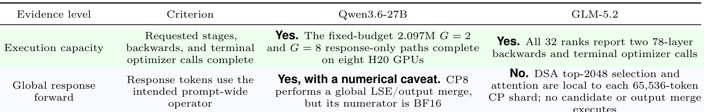
Table 8 是阅读全文的结论钥匙；这里裁出表头和前两级，以保证四列文字仍可辨认。第一行 execution capacity 对 Qwen 和 GLM 都是 Yes。第二行 global response forward 中，Qwen 因 CP8 LSE/output merge 为 Yes，但 numerator 用 BF16；GLM 为 No，因为 top-2,048 与 attention 均局限于本地 CP shard。原表第三行 distributed update 两者都是 No：Qwen 缺 shard-local K/V adapter gradient reduction，GLM 绕过 finalize_model_grads。原表第四行 full-gradient parity 也都是 No：prompt detached 且没有与常规 full-sequence 的逐参数数值参考，GLM 前向甚至先存在算子差异。
论文说明当前代码树已实现 global cross-CP DSA composition 并恢复 Megatron gradient finalization，但历史 2M 回执早于这套 pinned stack；只有 32K forward canary 覆盖新路径，没有 fresh source-bound 2M rerun 或 adapter-gradient/optimizer-delta parity。因此不能用“代码里已经补了”追认历史回执的更强语义。更可靠的升级顺序是先在 32K–64K 对每个 LoRA target family 做 forward、gradient 与 delta parity，再重跑固定预算 2M。
3.5 4.25M 压力测试与前缀冻结目标
附录把 Qwen 执行 envelope 推到 4,456,448 positions：4,448,256-token prompt 加 8,192-token response。resident \(G=8\) 路径完成全部 old/reference/policy branches 和每成员四个 2,048-token backward blocks，峰值 82.960 GB，但旧命令接口跳过 optimizer，因此是完整 replay receipt 而非 step receipt。另一个 prefix-frozen response-only 配置完成 8 个 \(G=8\) accumulation cycles、共 64 member replays 和 8 optimizer steps，峰值 83.894 GB；它通过禁用 prompt-position adapter delta 保证 prefix 不随 step 变化，是该明确目标下的连续训练证据，不是原 prompt-adapted QLoRA 目标。
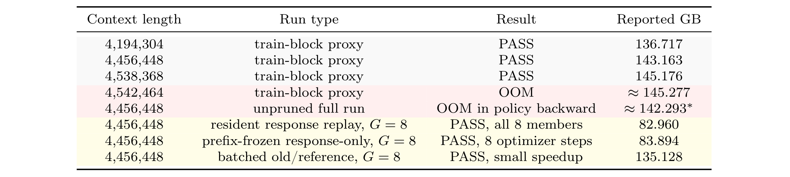
Table 11 迫使读者按 run type 区分数字。train-block proxy 在 4,538,368 通过，并在增加一个 4,096-token chunk 后于 4,542,464 OOM；unpruned full run 在 4,456,448 的 policy backward OOM；resident replay 与 prefix-frozen 8-step 则以更低峰值通过。它们的 autograd 边界、是否 step、是否允许 prompt adapter 更新和 memory measurement window 不同，不能从 82.960 GB 与约 145 GB 的差值推导统一余量。所有行也都没有关闭 CP8 adapter-gradient reduction gap。
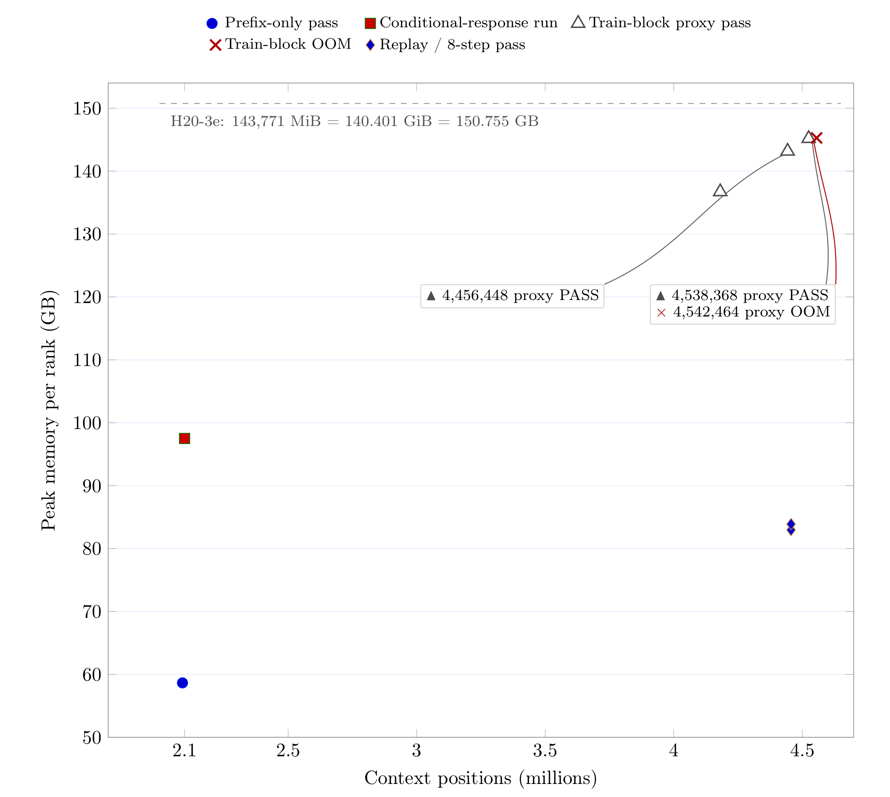
Figure 10 只把不同证据类型放在同一坐标系中，不是在拟合内存规律。三角形连线仅对应局部 train-block bracket，红叉是相邻 chunk OOM；低位菱形对应 replay/8-step detached-prefix 路径，圆点和方点则属于 prefix-only 或 conditional-response 语义。图中 4.25M 的写法是 \(4.25\times2^{20}=4,456,448\)，不是十进制 425 万。该图能支持“八张 H20 上存在这些具体执行点”，不能支持“完整 prompt-adapted GRPO 在 4.25M 正确训练”或“这是 context record”。不同标记还对应不同测量窗口，纵向差异不能直接解释为同一 objective 的显存收益。
4. 总结
4.1 我的判断
LongStraw 最有价值的部分不是把数字推到 2M/4.25M，而是把长上下文 RL 后训练拆成 state lifetime、physical ownership、operator fidelity、gradient composition 与 optimizer ordering 五个可审计问题。它证明在固定 GPU 数下，释放 prompt graph、保留最小条件状态并串行重放 response，确实能显著改变可执行 envelope；同时作者把“程序跑完”和“训练正确”主动分层，避免用 terminal optimizer call 替代梯度一致性。
对 Agent 与推荐系统工程的迁移点也很具体。长轨迹 Agent 的工具日志、检索文档和决策历史可以视为共享 prefix，多个候选 action、reranking branch 或离线 counterfactual response 可串行消费只读状态；推荐/广告链路若对同一超长用户历史评估多个候选 slate，也能借鉴“共享状态一次构造、分支逐个建图”的生命周期思想。但迁移前必须回答用户状态是否随可训练参数变化、跨候选复用是否引入 stale state、以及分片 item/user encoder 的梯度如何归约，不能只复制 offload 或 replay 外形。
4.2 局限与风险
第一，完整训练正确性尚未证明：两条路径都切断 prompt-state 梯度，Qwen 缺 K/V LoRA 梯度组合，GLM 历史路径同时缺 global DSA 和 CP gradient finalization。第二，工作负载是 execution probe：响应与奖励由外部给定，没有 rollout、环境交互、reward model、数据过滤、checkpoint/reload 或策略质量曲线。第三，实验可比性有限：Qwen 与 GLM 的模型、GPU 数、response 长度、objective、memory window 都不同；wall time 和 peak 不能跨行当系统排名。
第四，资源账本不完整：GLM 没有 whole-transaction peak，host memory、网络流量、能耗、利用率和成本没有完整核算，也没有相同模型/硬件/目标下的 matched baseline。第五，复现链仍不闭合：公开仓库当前不是可运行 release，历史 2M GLM 回执不受当前 pinned source stack 追溯约束，最终 artifact 还缺 learning rate、token checksum、LoRA seed、软件/NCCL 版本、gradient norm 与 router/all-to-all 统计。第六，4.25M 的 prefix-frozen 8-step 具有不同优化目标，不能被表述为原 prompt-adapted 训练的替代验证。
4.3 后续跟进
首先应在 32K–64K 构造同 token、同 reward、同初始权重的常规 full-sequence reference，逐 target family 比较 LoRA gradient、global cosine、relative L2 与 optimizer delta；只看 loss 或一个 global norm 会掩盖 K/V、attention、dense/shared expert 的局部错误。其次，应对当前 global DSA 实现做逐层 logit parity，验证 candidate merge、selected-value movement、output composition 和确定性 tie-breaking，再生成 fresh source-bound 2M receipt。第三，要记录 step 前后 adapter hash、各 rank replica equality、next-forward agreement，并把 Qwen selective K/V reduction 与 GLM gradient finalization 事件写进 trace。
最后才适合加入真实 rollout group、reward computation、重复 update、checkpoint 与 reload，并以统一 measurement window 记录 GPU/CPU/网络/时间。若继续挑战更长 GLM context，应先解决 32.577 GB 的 rank spread，再做直接的 \(>2M\) sweep；在此之前，“存在负载均衡空间”只是诊断线索，不是容量结论。就当前证据而言，LongStraw 已经是一份扎实的固定预算执行研究，但它仍处在从 architecture-shaped receipt 走向 model-faithful distributed training 的中间阶段。